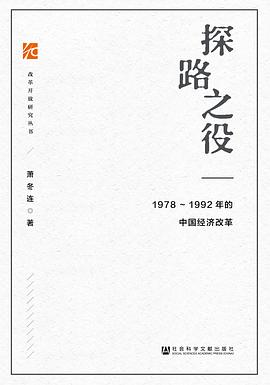

《探路之役》

总体观点
中国的改革开放绝非事前按照某份完美设计图按图索骥的浪漫坦途，而是一场在极其严峻的体制束缚、经济危机与意识形态激辩中步步为营的“探路之役”。萧冬连教授利用大量解密党史档案与亲历者访谈，全景还原了1978至1992年这十五年惊心动魄的转轨实录。
改革之所以能够突破死局，关键在于“边缘突破”与“双轨过渡”的渐进智慧。从小岗村农民冒死包产到户撕开人民公社缺口，到广东蛇口工业区与深圳特区打破对外开放坚冰，再到乡镇企业“异军突起”与价格双轨制的破土，市场力量始终是从国家计划体制边缘地带自发破土，最终倒逼体制核心做出历史性妥协。
全书真实记录了改革探索中经历的多次惊涛骇浪：莫干山会议的青年激辩、巴山轮会议的智识碰撞、价格闯关失利引发的抢购狂潮与通胀阵痛，以及治理整顿期间的激烈倒退争论。最终邓小平1992年南方谈话一锤定音，跨越意识形态临界点，确立社会主义市场经济体制，奠定了中国现代化的制度基石。
核心观点
-
1. 改革不是自上而下的蓝图预设，而是底层自发试验与顶层默许的互动
真正的重大制度创新，几乎无一例外源于基层民众为求生存而被迫采取的违法违规冒险，中央决策层在观察实效后逐步予以承认和推广。
安徽凤阳小岗村18位农民立下按下红手印的生死状分田单干，次年粮食大丰收，最终推动万里和中央把“包产到户”写入正式文件确立合法地位。 -
2. 特区试验：在严密的计划经济铁板上撕开融入全球体系的窗口
在封闭体制下直接搞全盘开放会遭遇难以承受的阻力。通过划定深圳、珠海等地理隔离的“经济特区”做单点试验，允许外资和市场机制先行先试。
袁庚在蛇口提出“时间就是金钱，效率就是生命”的口号，打破大锅饭实行超产计件奖金制度，以惊人的“蛇口速度”引爆全国改革思潮。 -
3. “价格双轨制”是体制转轨中减少震荡阻力的天才过渡妥协
如果一夜之间放开价格会导致恶性通胀与社会动荡；保留计划内平价指标保底，允许计划外超产部分按市场溢价自由浮动，逐步用增量消化存量。
1984年莫干山会议青年学者提出价格双轨制方案：钢厂完成国家配额后，多生产的钢材可以按市价卖给乡镇企业，瞬间激活了全国生产积极性。 -
4. 乡镇企业是体制外的“野草”，创造了市场经济不可逆的竞争增量
没有国家一分钱投资、得不到原材料计划配额的社队企业，依靠灵活机制与农民廉价劳动力，在消费品短缺时代异军突起，打破了国营企业垄断。
苏南模式与温州模式并驾齐驱，农民洗脚上田在简陋工棚里造五金、织毛衣，短短几年乡镇企业产值三分天下有其一，倒逼国企深化改革。 -
5. 1988年“价格闯关”失利揭示：产权改革与宏观调控必须配套先行
在国营企业软预算约束、没有建立现代企业制度的前提下，单纯激进放开全部消费品物价，必然诱发非理性的全社会恐慌性挤兑抢购与通胀失控。
价格闯关消息一出，全国老百姓疯狂跑到银行取钱排队抢购电视机、火柴甚至食盐，商场货架被一扫而空，迫使中央紧急刹车进入三年治理整顿。 -
6. 邓小平南方谈话跨越临界点：终结姓“资”姓“社”的意识形态争论
1992年初邓小平视察南方发表关键讲话，提出“三个有利于”标准与“计划和市场都是经济手段”，彻底砸碎教条主义枷锁，为确立社会主义市场经济奠定基调。
南方谈话打破了治理整顿以来的沉闷僵局，催生了1992年全国数十万体制内干部和知识分子“下海”经商创业潮，掀起了新一轮波澜壮阔的改革开放。
全书结构
-
第一章 中国改革开放的缘起
复盘文革结束后国民经济濒临崩溃的严峻现实；梳理出国考察潮带来的巨大外部震撼、国务院务虚会与十一届三中全会实现历史性转折的决断内幕。
谷牧率团考察西欧五国，看到西德汉堡港全自动化装卸与法国高速公路网络，中央领导层深刻意识到与发达国家的惊人代差，坚定了对外开放决心。 -
第二章 从放权、让利和松绑起步
梳理城市早期改革从提高农副产品收购价、扩大国营企业自主权到财政“分灶吃饭”的探索，展现打破高度中央集权统收统支格局的艰难开端。
四川推进扩大企业自主权试点，允许工厂在超额完成国家利润指标后提取少量留成作为员工奖金，沉寂多年的车间工人劳动积极性被瞬间激活。 -
第三章 国门是如何打开的
回顾宝钢等大型成套设备“大引进”遭遇的外汇瓶颈，记述中央决策创办深圳、珠海、汕头、厦门四大经济特区的波折历程与激烈争议。
蛇口工业区在炸山填海中遭遇“走资本主义道路”的严厉政治质疑，邓小平亲临深圳特区题词“深圳的发展和经验证明，我们建立经济特区的政策是正确的”。 -
第四章 农村改革率先突破
全景还原家庭联产承包责任制从安徽、四川少数大队秘密试验，经历激烈意识形态大争论，最终在中央一号文件中确立并席卷全国的历史过程。
1982年中央一号文件首次肯定包产到户是社会主义农业的组成部分，全国几亿农民甩开膀子干，粮食总产量连续数年刷新历史最高纪录。 -
第五章 “商品经济”：第一个重大突破
追踪经济理论界关于计划与市场关系的理论交锋，展现中共十二届三中全会通过《经济体制改革的决定》首次确认“有计划的商品经济”的历史性跨越。
莫干山会议上，一批风华正茂的中青年学者在山上彻夜激辩，写出的关于价格双轨制、外贸承包和股份制改革的建议直呈中南海最高层并被采纳。 -
第六章 启动城市改革与巴山轮会议
展现价格双轨制出台、农产品统派购制度废除后的市场繁荣；详细复盘1985年“巴山轮会议”中外顶尖经济学家同船纵论宏观调控与市场化转轨路径。
诺贝尔经济学奖得主托宾与中国学者在顺流而下的巴山轮游船上同吃同住，深入研讨如何在放开微观价格的同时通过央行货币政策遏制通胀恶魔。 -
第七章 改革的路径选择：从综合配套到全面承包
分析吴敬琏等学者倡导的“价、税、财联动配套改革”为何搁浅，记录企业经营全面转向承包经营制以及股份制破冰试点背后的逻辑取舍。
首都钢铁公司实行“包死基数、确保上缴、超收多分”的承包制改革，虽然短期内产量效益暴增，但也暴露出投资冲动与负盈不负亏的体制缺陷。 -
第八章 从价格闯关到治理整顿
如实复盘1988年夏天试图“长痛不如短痛”突击放开价格引发的全民抢购狂潮与严重通胀危机，以及随后中央被迫踩刹车推行三年“治理整顿”的得失。
银行网点前百姓通宵排长队取现，老百姓扛着面粉、布匹、甚至几十箱火柴肥皂回家囤积，物价指数暴涨近20%，迫使宏观政策骤然收紧。 -
第九章 “市场经济”：越过临界点
再现东欧剧变与苏联解体背景下国内关于姓“资”姓“社”的思想回潮与激辩，详述邓小平1992年视察南方发表谈话，推动中共十四大确立社会主义市场经济体制。
邓小平在深圳国贸大厦登高俯瞰，发表掷地有声的讲话：“发展才是硬道理”、“判断的标准，应该主要看是否有利于发展社会主义社会的生产力”。 -
第十章 从计划到市场：突破如何成为可能
系统总结中国渐进式转轨成功的制度密码：起始条件差异、农村率先破局释放市场动能、开放倒逼改革、地方政府竞争机制与开放务实的决策智慧。
与前苏联东欧推行激进“休克疗法”导致经济断崖崩溃形成鲜明对照，中国在不动存量基础上有序培育民营、特区与外资增量，走出一条平稳崛起的独特道路。